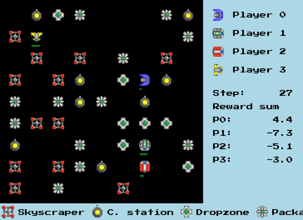

Du neurone artificiel au Deep Q-Network, avec l'étude de cas DroneRL
Session 1
Capacité d'un ordinateur à apprendre un comportement à partir d'exemples, plutôt que d'être explicitement programmé ligne par ligne.
Analogie : on n'écrit pas la recette pour reconnaître un chat sur une photo — on montre des milliers de photos de chats et le système déduit lui-même les règles.
Entre 1974 et 2006 : un long creux ("AI winter") — peu de progrès visibles.
Et on recommence : un modèle en production se dégrade (nouvelles situations, dérive des données) — il faut le ré-entraîner.
Sessions 1–2
Un neurone biologique reçoit des signaux de plusieurs autres neurones, les combine, et ne "s'active" que si le signal combiné dépasse un seuil.
Neurone biologique
Neurone artificiel
Le neurone artificiel reproduit cette idée avec des mathématiques simples : une somme pondérée, suivie d'une fonction qui décide de l'activation.
Entrées : \(x_1, x_2, \dots, x_n\)
Poids (appris) : \(w_1, w_2, \dots, w_n\)
Somme pondérée : \(w_1 x_1 + w_2 x_2 + \dots + w_n x_n\)
Biais (décale la fonction) : \(+\ b\)
Fonction d'activation : \(f(\cdot)\)
\[y = f(w_1x_1 + w_2x_2 + \dots + w_nx_n + b)\]
2 entrées : \(x_1 = 1.0\), \(x_2 = 0.5\) — poids : \(w_1 = 0.8\), \(w_2 = -0.6\) — biais \(b = 0.1\)
Somme pondérée : \(0.8 \times 1.0 + (-0.6) \times 0.5 + 0.1 = 0.8 - 0.3 + 0.1 = 0.6\)
Avec ReLU : \(f(0.6) = \max(0, 0.6) = 0.6\) → le neurone "s'active" à 0.6.
Choix souvent empirique : ReLU en interne, Softmax en sortie pour une classification.
On empile des neurones en couches, chaque couche recevant la sortie de la précédente.
L'information circule de gauche à droite : chaque couche transforme le signal.
Avance les fragments un par un pour voir le signal progresser couche par couche.
On compare la sortie prédite \(\hat y\) à la vraie étiquette \(y\).
Exemple avec Softmax + encodage one-hot :
\([0.02,\ 0.9,\ 0.03,\dots] \to [0,1,0]\) → quasi parfait, loss faible
\([0.02,\ 0.9,\ 0.03,\dots] \to [1,0,0]\) → mauvaise prédiction, loss élevée
\[\text{Loss} = -\sum y_{\text{label}} \cdot \log(y_{\text{modèle}})\]
On remonte l'erreur de la sortie vers l'entrée pour savoir quel poids corriger, et de combien.
Chaque poids est ajusté dans la direction qui réduit l'erreur — un peu à la fois, à chaque passage.
Sessions 2–3
Exemple : reconnaître des chiffres manuscrits (MNIST).
Exemple : un modèle "célébrités" réadapté pour reconnaître le genre.
Exemple : un drone de livraison qui apprend à livrer des colis.
Le transfert est le plus pertinent pour un projet personnel : on a rarement des millions d'exemples.
| Données nécessaires | Exemple cours | |
|---|---|---|
| Supervisé | Beaucoup, étiquetées | MNIST |
| Transfert | Peu, étiquetées | Célébrités → genre |
| Auto-supervisé | Beaucoup, non étiquetées | — |
| Renforcement | Aucune (récompenses) | DeliveryDrones |
MNIST — Session 3
Reconnaître un chiffre manuscrit (0 à 9) à partir d'une image de 28×28 pixels, en noir sur blanc.
Démo : un "7" manuscrit, simplifié en grille 10×12 pour l'illustration (le vrai MNIST fait 28×28).
Découpage classique : 80% / 20% entre train et test ; validation_split=0.1 dans Keras.
Le chiffre "2" devient un vecteur avec un seul 1, à la position 2 :
\[2 \longrightarrow [0,0,1,0,0,0,0,0,0,0]\]
model = keras.Sequential(
[
keras.Input(shape=(28, 28)),
layers.Flatten(),
layers.Dense(250, activation="relu"),
layers.Dense(250, activation="relu"),
layers.Dense(250, activation="relu"),
layers.Dense(num_classes, activation="softmax"),
]
)
\(\text{params} = (\text{entrées} \times \text{neurones}) + \text{neurones}\)
| Couche | Entrées | Neurones | Total |
|---|---|---|---|
| dense | 784 | 250 | 196 250 |
| dense_1 | 250 | 250 | 62 750 |
| dense_2 | 250 | 250 | 62 750 |
| dense_3 | 250 | 10 | 2 510 |
Seul le nombre d'entrées change — c'est la taille de sortie de la couche précédente.
\[\text{Loss} = -\sum y_{\text{label}} \cdot \log(y_{\text{modèle}})\]
Prédiction \([0.02, 0.9, 0.03,\dots]\), étiquette \([0,1,0]\) → bonne correspondance → loss faible.
Même prédiction, étiquette \([1,0,0]\) → mauvaise correspondance → loss élevée.
\[\text{accuracy} = \frac{1}{N}\sum \mathbb{1}[\arg\max(\hat y) = \arg\max(y)]\]
Autrement dit : le pourcentage de bonnes réponses.
model.fit(x_train, y_train, epochs=10, validation_split=0.1)
Un epoch = un passage complet du jeu de données dans le réseau.
Outil utilisé en cours pour visualiser l'entraînement en direct : Weights & Biases (WandB).
Sessions 3–4
Le modèle apprend par cœur le jeu d'entraînement au lieu de comprendre la règle générale.
Analogie : un élève qui mémorise les réponses d'un examen blanc, mais échoue dès que les questions changent un peu.
■ Train loss — continue de baisser ■ Validation loss — stagne puis remonte
Val accuracy qui plafonne pendant que train accuracy s'approche de 100% : signal classique d'overfitting.
Pendant l'entraînement, on désactive aléatoirement certains neurones à chaque mise à jour.
Entraînement : layers.Dropout(0.5) — environ la moitié des neurones "off" à chaque passage
Inférence (utilisation réelle) : tous les neurones sont actifs.
Résultat observé en labo : meilleure généralisation, moins de risque d'overfitting — au prix d'une précision d'entraînement plus basse.
On évite ainsi de continuer à entraîner pour rien — ou pire, de sur-apprendre.
Session 4
Analogie : un expert en reconnaissance de chiens qui apprend à reconnaître des loups — il réutilise déjà sa capacité à voir des formes, des textures, des bords.
Exemple du cours : EfficientNetB0 (Google), entraîné sur ImageNet (des millions d'images), attend des entrées 224×224px.
Ses couches ont déjà appris des caractéristiques génériques : bordures, textures, formes.
On entraîne seulement la tête de classification, initialisée au hasard.
Pourquoi ? Si on dégèle tout d'un coup, les gradients énormes de la tête aléatoire risquent de "corrompre" les poids bien appris du backbone.
Une fois la tête stabilisée, on dégèle progressivement des couches du backbone.
Learning rate plus faible à cette étape : on affine sans "oublier" ce qui a déjà été appris.
Transformer les images d'entraînement pour en créer des variantes : plus de diversité, moins d'overfitting.
Exemple du cours : détecter le sens de déplacement d'un animal, avec un RandomFlip (mirroring).
Le flip inverse gauche et droite → le modèle apprend une mauvaise règle.
L'augmentation de données n'est pas automatiquement bénéfique — il faut qu'elle préserve le sens de la tâche.
Session 5
Analogie : on apprend à un bébé à marcher étape par étape — d'abord à quatre pattes, puis en se tenant, puis seul.
C'est l'idée du curriculum learning : complexifier progressivement la tâche.
Un épisode se termine quand le but est atteint — ou n'est plus atteignable.
Objectif : maximiser la somme des récompenses au fil du temps.
Analogie : tester un nouveau restaurant (exploration) vs retourner dans son préféré (exploitation).
Trop d'exploitation → on reste bloqué sur une solution médiocre.
Trop d'exploration → on n'exploite jamais ce qu'on a appris.
Des drones qui livrent des colis, sans percuter les murs ni les gratte-ciels, en passant par des stations de charge.
■ drone ■ colis ■ gratte-ciel ■ dropzone
L'agent trouve souvent une solution "originale", à laquelle on n'aurait pas pensé.
Ce n'est pas un bug du modèle — c'est exactement ce qu'on lui a demandé d'optimiser.
Sessions 5–6
Une table qui donne, pour chaque état et chaque action, la récompense future attendue.
Mini-monde d'exemple : un couloir à 3 cases — case 1 = station de charge, case 3 = dropzone.
\(s, a\) : état courant, action choisie — \(r\) : récompense reçue — \(s'\) : état suivant
\(\gamma\) (0 à 1) : importance du futur — proche de 1 = vision long terme
\(\alpha\) (0 à 1) : taux d'apprentissage — part de l'erreur corrigée à chaque fois
\[Q(s,a) \leftarrow Q(s,a) + \alpha\big[r + \gamma \max_{a'} Q(s',a') - Q(s,a)\big]\]
État \(s=\) case 2, action \(a=\) "droite". \(\alpha = 0.5\), \(\gamma = 0.9\).
| État | Gauche | Droite | Charger |
|---|---|---|---|
| 1 | 0.10 | 0.20 | 0.05 |
| 2 | 0.15 | 0.40 | — |
| 3 | 0.10 | 0.00 | 0.00 |
\(Q(2, \text{droite}) = 0.40\)
L'agent part de la case 2, se déplace à droite → arrive en case 3 (dropzone) → livre un colis.
Récompense observée : \(r = +10\)
On regarde la meilleure valeur possible depuis le nouvel état \(s' = \) case 3 :
| État | Gauche | Droite | Charger |
|---|---|---|---|
| 1 | 0.10 | 0.20 | 0.05 |
| 2 | 0.15 | 0.40 | — |
| 3 | 0.10 | 0.00 | 0.00 |
\(\max_{a'} Q(s',a') = 0.10\)
\[Q(s,a) \leftarrow Q(s,a) + \alpha\big[r + \gamma \max_{a'} Q(s',a') - Q(s,a)\big]\]
\(= 0.40 + 0.5 \times \big[10 + 0.9 \times 0.10 - 0.40\big]\)
\(= 0.40 + 0.5 \times 9.69\)
\(= 5.245\)
| État | Gauche | Droite | Charger |
|---|---|---|---|
| 1 | 0.10 | 0.20 | 0.05 |
| 2 | 0.15 | 5.25 | — |
| 3 | 0.10 | 0.00 | 0.00 |
La case se met à jour et "flashe" — c'est exactement ce qui se répète à chaque pas, des milliers de fois.
\(\epsilon\) démarre haut (beaucoup d'exploration) puis décroît vers une petite valeur (surtout de l'exploitation).
epsilon_start → epsilon_decay → epsilon_end
La taille de la Q-table explose avec la complexité de l'environnement.
Avec gratte-ciels + décharge en plus dans DeliveryDrones, le nombre de combinaisons état×action devient ingérable pour une simple table.
On en reparle en détail dans l'étude de cas DroneRL.
Sessions 6–7
Puisque la Q-table explose, on remplace la table par un réseau de neurones qui approxime les valeurs Q.
L'agent = un optimizer (ex. Adam) + un réseau de neurones (Q-net).
L'équation de Bellman n'est plus directement utilisable — on calcule une erreur qu'on cherche à minimiser, comme pour un réseau classique.
Un réseau de neurones apprend bien sur des données bien contrastées — pas sur une suite d'instants très similaires.
Replay Memory : on stocke les expériences passées, puis on en tire des échantillons aléatoires pour l'entraînement.
Le buffer se remplit au fil de l'exploration...
...puis un mini-batch est tiré au hasard pour mettre à jour le réseau.
target_update_interval stepsCela stabilise l'entraînement : la "cible" ne bouge pas à chaque pas, ce qui évite les oscillations.
Plusieurs agents (ex. plusieurs drones) peuvent être entraînés sur un seul réseau partagé.
Avantage : gère plus de cas différents. Inconvénient : epsilon baisse plus vite, l'entraînement est plus lent, tous les agents se comportent de façon similaire.
Prioritized Experience Replay — Session 7
Toutes les expériences stockées ne se valent pas : certaines sont routinières, d'autres très instructives.
On priorise les expériences avec une erreur TD élevée — celles où le réseau s'est le plus trompé.
Une erreur élevée = une expérience "surprenante", donc plus riche à apprendre.
À trop se concentrer sur l'atypique, on peut oublier des comportements de base pourtant essentiels.
| Famille | Principe | En bref |
|---|---|---|
| Value-based | Q-table / DQN | + simple · − scalabilité |
| Policy Gradient | Prédit directement la probabilité de chaque action | + actions continues · − variance |
| Model-based | Apprend une représentation du monde, prédit la frame suivante | + efficace en données · − complexe |
| Acteur-Critique | Mixe action (acteur) + évaluation (critique) | + stable · − deux réseaux à régler |
En pratique : la librairie RLlib propose des implémentations Acteur-Critique prêtes à l'emploi.
Sessions 5–7 · AIcrowd
Des drones qui livrent des colis, évitent les gratte-ciels, et se rechargent à des stations avant de tomber en panne de batterie.

Rendu réel de l'environnement (notebook du cours) : chaque joueur (drone) accumule sa propre somme de récompenses au fil des steps.
Vu en session 7 : on fait évoluer les récompenses entraînement après entraînement pour orienter le comportement.
| Run | pickup | crash | charge | delivery | Résultat observé |
|---|---|---|---|---|---|
| 1 | 10 | -0.1 | -0.1 | — | Récupère des colis, se crashe peu |
| 2 | 0 | -10 | -0.1 | — | Évite les crashs, mais ne livre pas |
| 3 | 0 | -10 | 10 | — | Se recharge trop, "farme" la charge |
| 4 | 0 | -10 | -0.1 | 1 | Score correct, mais bouge peu |
| 5 | 1 | -10 | -0.1 | 10 | Meilleur compromis |
Leçon du cours : un bon score global peut cacher un comportement absurde — toujours vérifier la vidéo de l'agent, pas seulement le chiffre.
Un observation wrapper décide ce que l'agent peut réellement voir de l'environnement.
Plus le wrapper est riche, plus la Q-table (ou le réseau) doit gérer de combinaisons.
CompassQTableLe plus simple : juste une direction vers la cible la plus proche. Pas de gratte-ciel, pas de décharge dans cette première version.
LidarCompassQTableOn ajoute un LIDAR : un détecteur de proximité pour les gratte-ciels (obstacles).
LidarCompassChargeQTableOn ajoute la conscience de la batterie : le drone "sait" quand il doit se recharger.
WindowedGridViewUtilisé avec DQN : une vraie fenêtre locale N×N centrée sur le drone, avec 6 canaux :
drones · colis · dropzones · stations · charge · obstacles
radius=2 en cours, puis radius=3 pour le challenge officiel.
L'agent ne voit jamais toute la grille — seulement son voisinage proche.
Point de départ : un agent qui choisit ses actions totalement au hasard — la ligne de base à battre.
Q-table, avec les wrappers Compass → +Lidar → +Charge.
Problèmes observés dans le notebook du cours :
DQN, avec le wrapper WindowedGridView.
Passer d'une table à un réseau est exactement ce qui rend la fenêtre locale riche exploitable — plus besoin d'une entrée par combinaison exacte.
DQN + Prioritized Experience Replay — l'agent envoyé sur le leaderboard officiel.
Session 7 : boucle d'entraînement perfectionnée (train_agents, suivi tqdm, suivi d'epsilon) + évaluation finale séparée (test_agents, summarize_rewards).
WindowedGridView) ou son radius=3Les récompenses par défaut sont utilisées pour l'évaluation officielle, quoi que vous ayez utilisé à l'entraînement.
aicrowd.com/challenges/dronerlgithub.com/nyx-ai/droneRLgithub.com/MasterScrat/droneRL-workshop — et ses 4 decks de slides originaux (What is RL? · The DroneDeliveries environment · DQN intro · Going further)Prochainement : NLP, modèles de séquence — RNN, LSTM, Transformers.
Questions ?